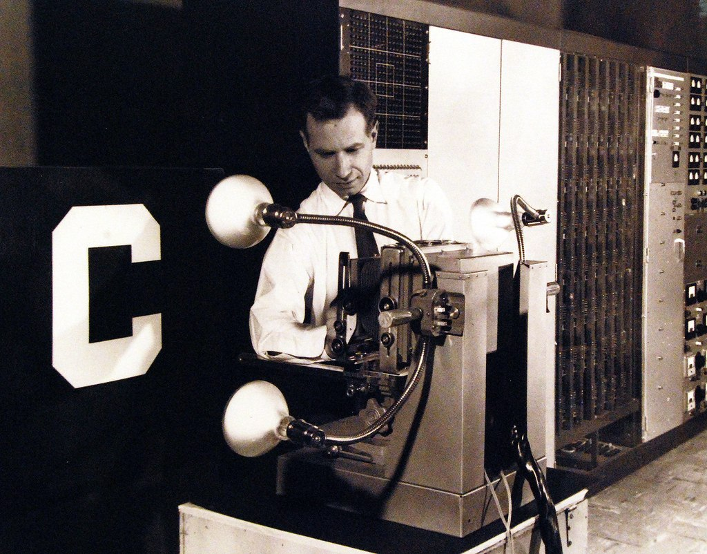

Classification · Part 3
McCulloch & Pitts neuron and perceptron
From a hand-set threshold for AND to a learned separator. XOR shows the limit of a single straight boundary.
How can we classify by location?
In Part 2, we used nearby examples to classify a new point. Now we’ll focus on the geometry of the decision. What separates the parts of the plot that get different labels?
What is a separator?
A separator, also called a discriminant, is a decision rule that divides the input space into regions. A new point gets the label of the region it lands in.
How many regions?
With C classes, there are C prediction regions, one for each label. For two classes, a straight line can serve as the boundary if the classes lie on opposite sides.
The AND problem starts with four switch settings
Each switch is off (0) or on (1). Our task is to predict the output of logical AND, which is 1 only when both switches are on.
How can a threshold neuron model AND?
For each switch setting xᵢ, the neuron adds the two inputs. The sum counts how many switches are on. The neuron predicts 1 when the score reaches the threshold b, and 0 otherwise. To model AND, only the setting (1, 1) should reach b.
Work out the neuron’s output for two thresholds
Each row i is one switch setting. Here m = 2. Add the two inputs to get g(xᵢ), subtract b, then use the indicator 𝟙. It gives 1 for zero or positive results and 0 otherwise.
| Row i | First input xi1 | Second input xi2 | Sum g(xᵢ) | Threshold b = 2 | Threshold b = 2.5 | ||
|---|---|---|---|---|---|---|---|
| g(xᵢ) − b | Output ŷᵢ | g(xᵢ) − b | Output ŷᵢ | ||||
| 1 | 0 | 0 | 0 + 0 = 0 | 0 − 2 = −2 | 𝟙(−2 ≥ 0) = 0 | 0 − 2.5 = −2.5 | 𝟙(−2.5 ≥ 0) = 0 |
| 2 | 0 | 1 | 0 + 1 = 1 | 1 − 2 = −1 | 𝟙(−1 ≥ 0) = 0 | 1 − 2.5 = −1.5 | 𝟙(−1.5 ≥ 0) = 0 |
| 3 | 1 | 0 | 1 + 0 = 1 | 1 − 2 = −1 | 𝟙(−1 ≥ 0) = 0 | 1 − 2.5 = −1.5 | 𝟙(−1.5 ≥ 0) = 0 |
| 4 | 1 | 1 | 1 + 1 = 2 | 2 − 2 = 0 | 𝟙(0 ≥ 0) = 1 | 2 − 2.5 = −0.5 | 𝟙(−0.5 ≥ 0) = 0 |
With b = 2.5, even (1, 1) falls below the threshold. Every row predicts 0.
Which thresholds reproduce AND?
| X₁ | X₂ | X₁ + X₂ | Y |
|---|---|---|---|
| 0 | 0 | 0 | 0 |
| 0 | 1 | 1 | 0 |
| 1 | 0 | 1 | 0 |
| 1 | 1 | 2 | 1 |
Keep class 0 below the threshold
The largest class-0 sum is 1. A threshold of 1 would also fire for a single active input.
Let class 1 reach the threshold
The only class-1 row has sum 2. A threshold of 2 still fires at equality.
Combine the two bounds
This interval contains every threshold that classifies all four AND inputs correctly.
How does moving the boundary change AND?
Start at b = 1.9 and find the only input on the class-1 side. Then try b = 1 and b = 2. Which points land on the line, and what does the neuron predict for them?
The machine that learned to read letters

In 1958, Frank Rosenblatt asked how memory changes what we recognize.
“In what form is information stored, or remembered?”
The Mark I saw a letter through 400 light sensors. Its adjustable weights were physical components turned by little motors.
A trainer corrected the machine when it guessed wrong. We’ll do the same with the weights of a separator.
Rosenblatt’s 1958 paper, p. 386 · Hardware details, fig. 4.8
The four AND inputs become four clouds
Inspect how the input coordinates vary. The upper-right cloud still has class 1.
The perceptron learns a weighted threshold rule
To separate the noisy classes, the perceptron uses a weighted McCulloch & Pitts neuron (MPN). It learns the weights w = (w₀, …, wₘ) from labeled examples, so some inputs can have more influence than others.
Why are the forms equal? The sum starting at j = 0 includes the term w₀xᵢ₀. Since xᵢ₀ = 1 for every observation, that term is just w₀. The second form writes it outside the sum.
Setting every feature weight to 1 and w₀ = −b gives the original MPN rule with threshold b.
How does a perceptron learn its weights?
Predict
A score of 0 predicts class 1.
Compare
Adjust the weights
The perceptron in action

Use the prediction error to update the weights
The update is inspired by Hebbian learning, a principle that links connection strength to neuron activity. The perceptron uses the known label to decide how to correct its prediction.
| Observed label | Predicted label | Change to each weight |
|---|---|---|
| 0 | 0 | Keep the weights |
| 1 | 1 | Keep the weights |
| 1 | 0 | Add each input component |
| 0 | 1 | Subtract each input component |
Why does the correction move the score?
Compare the weighted score for the same example before and after one update. Zero or more predicts class 1. A negative score predicts class 0.
Correct prediction
The predicted class matches the observed class, so yᵢ − ŷᵢ = 0. The update adds 0 to every weight, leaving the score for this example unchanged.
Missed a class 1
The true class is 1 and the prediction is 0. Put the error 1 − 0 into the update rule for one weight.
In the right sum, the xᵢⱼ inside the parentheses comes from this weight update. The xᵢⱼ outside is the input we multiply by to score the same example again.
Expand the product
In the right-hand sum, multiply the outside xᵢⱼ by both terms in parentheses. The old weight gives wⱼ⁽ᵗ⁾xᵢⱼ. The added input gives xᵢⱼ × xᵢⱼ = xᵢⱼ².
Separate the sums
Collect the old weighted inputs into the first sum. That is the old score. The second sum adds the squared inputs. This increases the score because xᵢ₀ = 1 contributes 1². The prediction becomes 1 when the new score reaches zero or above.
Predicted 1 by mistake
Now the true class is 0 and the prediction is 1, so the error is −1. Each new weight is the old weight minus its input. The same multiplication gives old score minus the sum of squared inputs. A negative new score predicts class 0.
Which formulas do we use for one update?
Use the old score and the change in each weight to rescore the same example.
Find each weight change
Multiply the learning rate by the prediction error and by the input for that weight.
Compute the new score
Multiply each weight change by its input again. Add these contributions to the old score.
Predict the class
Check the new score against zero.
What changes after one perceptron update?
The starting score is −7, the true label is 1, and the prediction is 0. The learning rate η is 1. Use inputs (1, 2, −1), with the bias input first.
Update each weight
Compute the new score
Predict the class
Step through perceptron learning
Choose Next example to follow the circled point. Compare its prediction before the update with its score afterward.
Inspect a trained perceptron on noisy AND
This trained perceptron separates all 360 noisy training points. Select a point to see which side of the learned line it falls on.
The learning rate controls the size of a correction
One mistake
Doubling η doubles the size of that weight correction.
A complete run
With zero initial weights, fixed order and constant positive η, the weights scale with η and the mistake sequence stays the same in exact arithmetic.
Try to separate the four XOR points
Change AND to “exactly one switch is on.” Can you draw a single line that separates the two labels?
Why one line cannot separate XOR
Class 0 at (0,0) and (1,1)
Class 1 at (1,0) and (0,1)
Four points, one line, and a famous book
Marvin Minsky and Seymour Papert’s 1969 book Perceptrons studied the limits of this kind of classifier. XOR is the smallest parity example. It asks whether the number of active inputs is odd.
What made it worth studying
“worthy of study despite (and even because of!) its severe limitations”
We just saw one such limit. A straight line through the two original features cannot separate XOR.
What they left open
“elucidate (or reject) our intuitive judgment that the extension is sterile”
They were skeptical that adding layers would yield a useful learning rule. Their wording invites a test of that conjecture.
What cooled during the first AI winter?
The first AI winter was a period of reduced interest and funding for parts of AI research. The perceptron debate was one part of a broader slowdown.
1960s · Funding was already tightening
Rosenblatt struggled to secure funding for larger projects before the 1969 book appeared.
1973 · The UK scrutinized AI
James Lighthill’s review asked why methods that worked on small examples struggled as the number of possibilities exploded.
1986 · XOR returned as a test case
Rumelhart, Hinton and Williams showed how backpropagation could train hidden units that let a network solve XOR.
Funding history · Lighthill’s report · The 1986 XOR experiments
What to take away
- Use an input sum and a threshold to reproduce AND.
- Explain how a perceptron learns by correcting mistakes.
- Use XOR to explain the limits of a single linear separator.
Bishop on classification
Read chapters 4 and 7 for linear discriminants, perceptron learning, and support vector machines.
Continue the course
Lecture 13 · Classification · Part 3